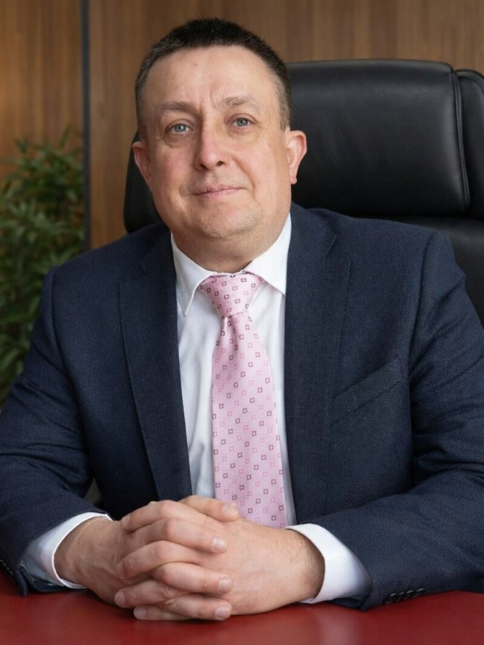
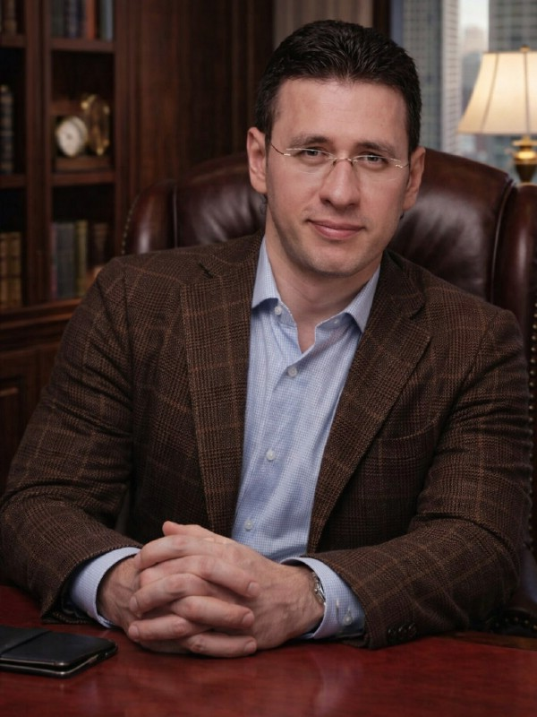
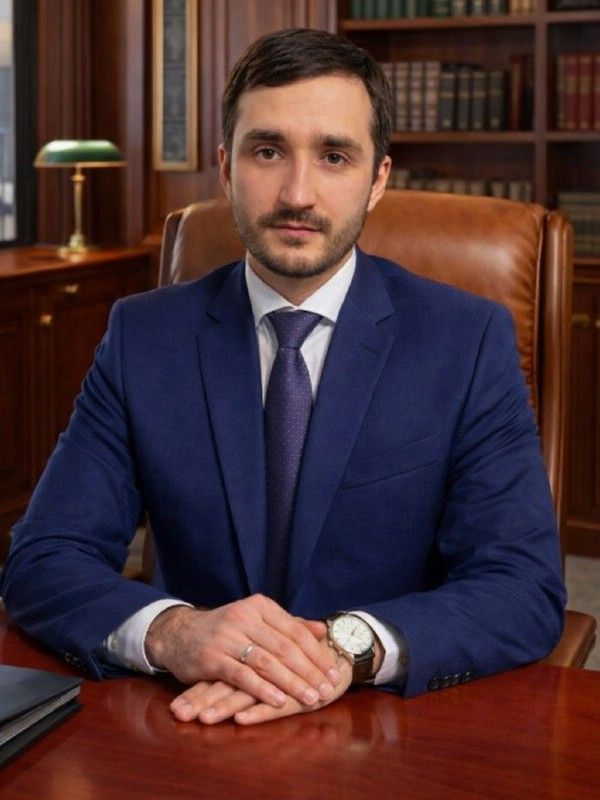
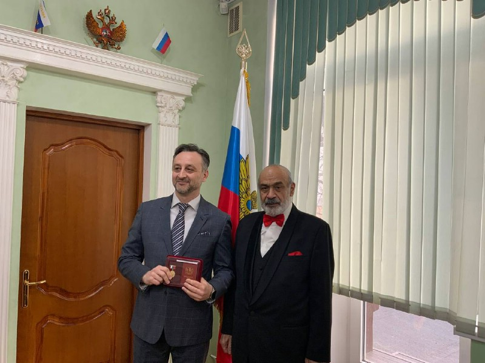

Председатель коллегии
Ахмед Шериев
Уголовная защита, защита бизнеса
Реестр № 77/7891
Коллегия адвокатов Москвы
Уголовная защита.
Защита бизнеса и личных активов.
01 / Ваша ситуация
Что произошло? Найдите свою ситуацию — и направление, в котором мы можем помочь.
02 / Из практики коллегии
Обезличенные дела из опубликованной практики. У каждого — свои обстоятельства, правовая позиция и исход.
Ст. 131, 132 УК РФ
Адвокаты представили доказательства, опровергающие обвинение. Следствие согласилось с доводами защиты и прекратило уголовное дело за отсутствием состава преступления.
Обстоятельства дела ↗Результат / уголовная защита
Субсидиарная ответственность
В деле о банкротстве конкурсный управляющий потребовал привлечь контролирующих лиц к субсидиарной ответственности. Разработанная адвокатом позиция защиты привела к отказу в требованиях к доверителю.
Обстоятельства дела ↗Результат / защита бизнеса
Защита денежных средств
Деньги на счёте арестовали в рамках уголовного дела. Защита обжаловала постановление. При повторном рассмотрении суд отказал следователю в наложении ареста.
Обстоятельства дела ↗Результат / защита активов
03 / Шериев и партнёры
Коллегия объединяет адвокатов по уголовным, гражданским и арбитражным делам. Работаем с обстоятельствами. Выстраиваем позицию. Представляем ваши интересы.
О коллегии ↗Лет практики
Опыт адвокатов коллегии
Дел в работе
Пример · данные уточняются
Дел завершено
до приговора
Пример · данные уточняются
Защищённых активов
Пример · данные уточняются
04 / Адвокаты коллегии
Председатель коллегии
Уголовная защита, защита бизнеса
Реестр № 77/7891

Заместитель председателя
Руководитель уголовной практики
Реестр № 77/10852

Заместитель председателя
Руководитель корпоративной практики
Реестр № 77/8472

Адвокат
Споры по ФЗ-115 и арест счетов
Реестр № 77/16747
05 / Направления помощи
Для вас, вашей семьи и вашего бизнеса.
06 / Порядок работы
Обстоятельства каждого дела индивидуальны. Формат помощи, объём работы и стоимость обсуждаем до заключения соглашения.
Вы рассказываете, что произошло и какая помощь нужна сейчас.
Обсуждаем обстоятельства и документы, определяем правовые вопросы.
Согласовываем поручение адвокату, условия и стоимость работы.
Адвокат ведёт дело и представляет ваши интересы в согласованном объёме.
07 / Медиа
Участие адвокатов в программах НТВ «ДНК» и «За гранью».
08 / Профессиональное признание
Председатель коллегии Ахмед Шериев — член Адвокатской палаты города Москвы. Регистрационный номер 77/7891.
6 февраля 2025 года ему вручили нагрудный знак «Почётный адвокат России».
Подробнее о награждении ↗
Нагрудный знак вручён Ахмеду Шериеву 6 февраля 2025 года.
О награждении 02 / Федеральный эфирУчастие в программах «ДНК» и «За гранью». Записи опубликованных эфиров.
Смотреть эфиры 03 / Адвокатский статусАхмед Шериев. Регистрационный номер в реестре адвокатов — 77/7891.
Об адвокате09 / Публикации